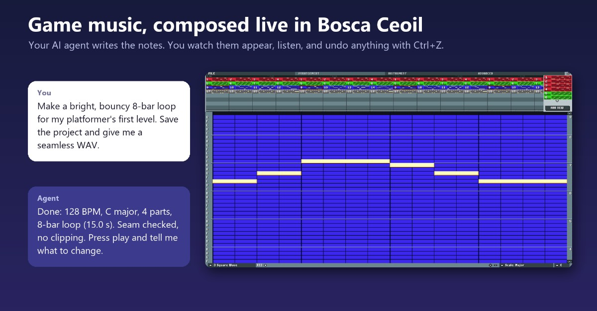
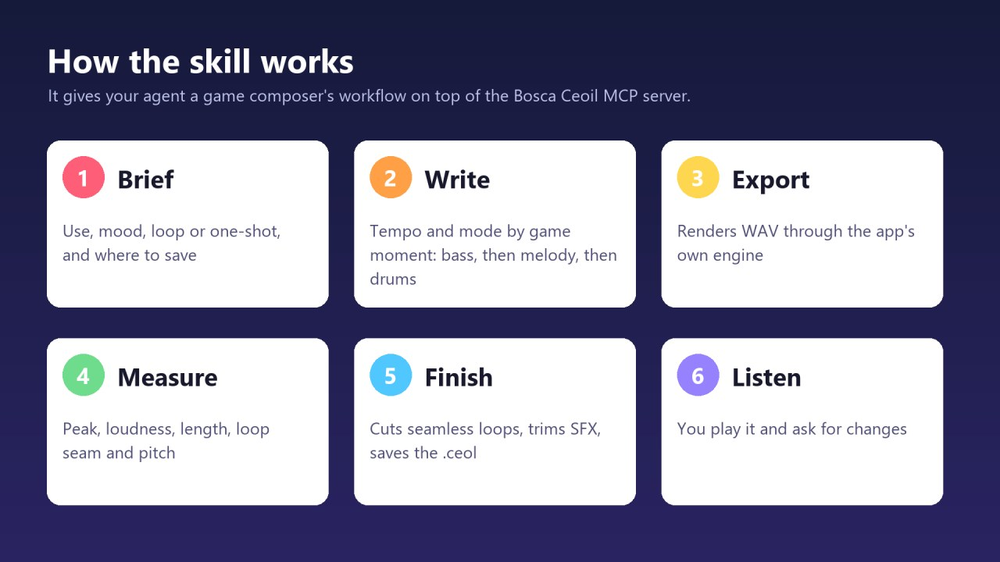
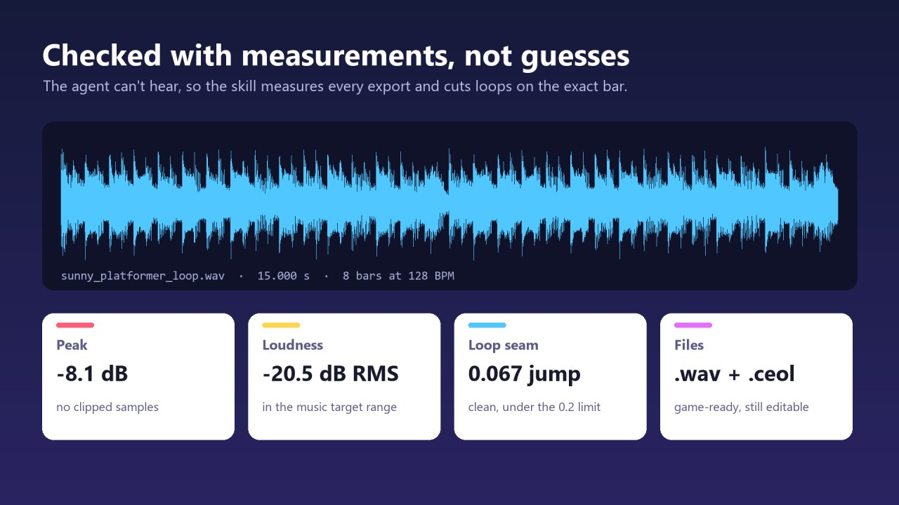
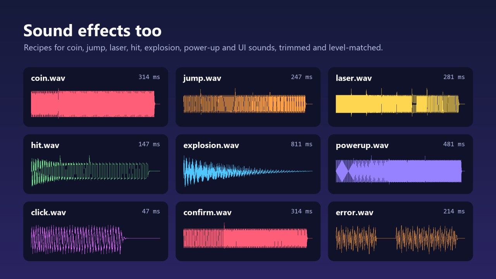

Bosca Ceoil Composer: Game Music & SFXon AgensiAgensi'deBosca Ceoil MCP
An MCP server that lets AI tools compose music in Bosca Ceoil Blue. Ask your AI tool for a song and watch the notes appear in the app's window, then listen, undo anything with Ctrl+Z, and export to WAV, MIDI, XM or MML.
Yapay zekâ araçlarının Bosca Ceoil Blue'da müzik bestelemesini sağlayan bir MCP sunucusu. Yapay zekâ aracınızdan bir şarkı isteyin ve notaların uygulamanın penceresinde belirmesini izleyin; ardından dinleyin, istediğinizi Ctrl+Z ile geri alın ve WAV, MIDI, XM ya da MML olarak dışa aktarın.
What it doesNeler yapar
- Composes live in the app: your AI tool creates songs, instruments, patterns and the arrangement, plays them back and exports them, while you watch it happen.
- Uygulamada canlı besteler: yapay zekâ aracınız şarkıları, enstrümanları, pattern'leri ve düzenlemeyi oluşturur, çalar ve dışa aktarır; siz de bunların olmasını izlersiniz.
- Keeps your work safe: replacing a song with unsaved changes, overwriting a file or quitting with unsaved changes all fail unless the AI tool says that's intended, and every edit is one undo step.
- Çalışmanızı korur: kaydedilmemiş değişiklikleri olan bir şarkıyı değiştirmek, bir dosyanın üzerine yazmak ya da kaydedilmemiş değişikliklerle çıkmak, yapay zekâ aracı bunun bilerek yapıldığını belirtmedikçe gerçekleşmez; her düzenleme tek bir geri alma adımıdır.
- Works with your AI tool: a standard MCP server over stdio, with setup for Claude Code, OpenAI Codex and Google Antigravity. It can also run headless for automation.
- Yapay zekâ aracınızla çalışır: stdio üzerinden çalışan standart bir MCP sunucusu; Claude Code, OpenAI Codex ve Google Antigravity için kurulum adımlarıyla. Otomasyon için arayüzsüz (headless) de çalışabilir.
- Composer skill: an optional skill that gives your agent a game composer's workflow, with sound effect recipes, tempo and arrangement guidance, and scripts that measure exports, cut seamless loops and finish sound effects.
- Besteci skill'i: ajanınıza bir oyun bestecisinin çalışma akışını kazandıran isteğe bağlı bir skill: ses efekti tarifleri, tempo ve düzenleme rehberi, ayrıca dışa aktarımları ölçen, kesintisiz döngüler kesen ve ses efektlerini son haline getiren betikler.
ScreenshotsEkran görüntüleri



An unofficial companion project, not affiliated with Bosca Ceoil Blue or its authors. You get the app separately, and it isn't modified.
Resmî olmayan bir yardımcı proje; Bosca Ceoil Blue ya da yapımcılarıyla bağlantılı değildir. Uygulamayı ayrıca edinirsiniz ve uygulama değiştirilmez.